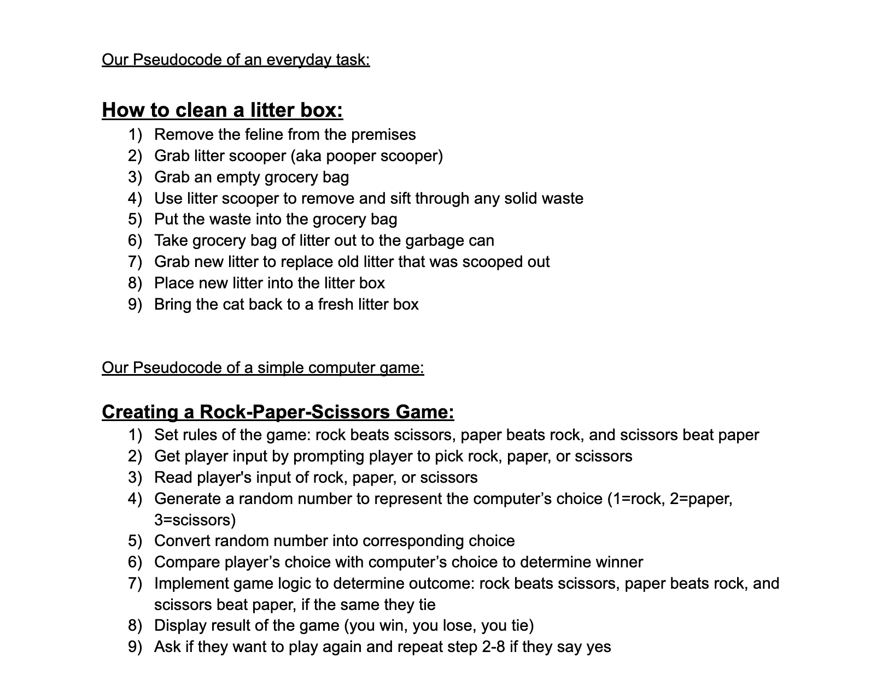
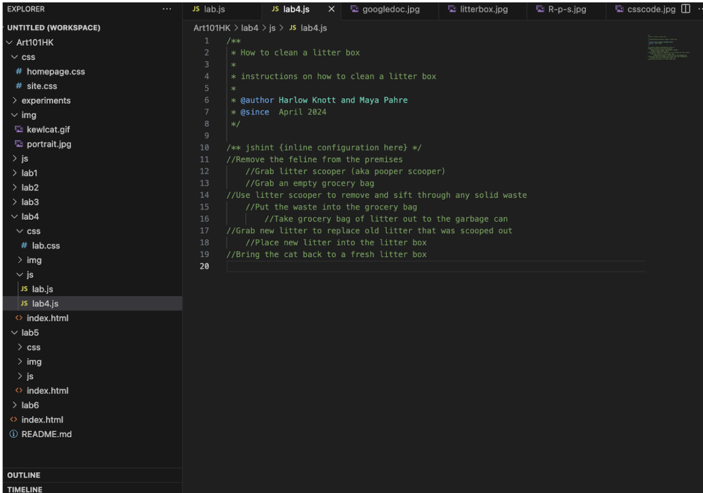
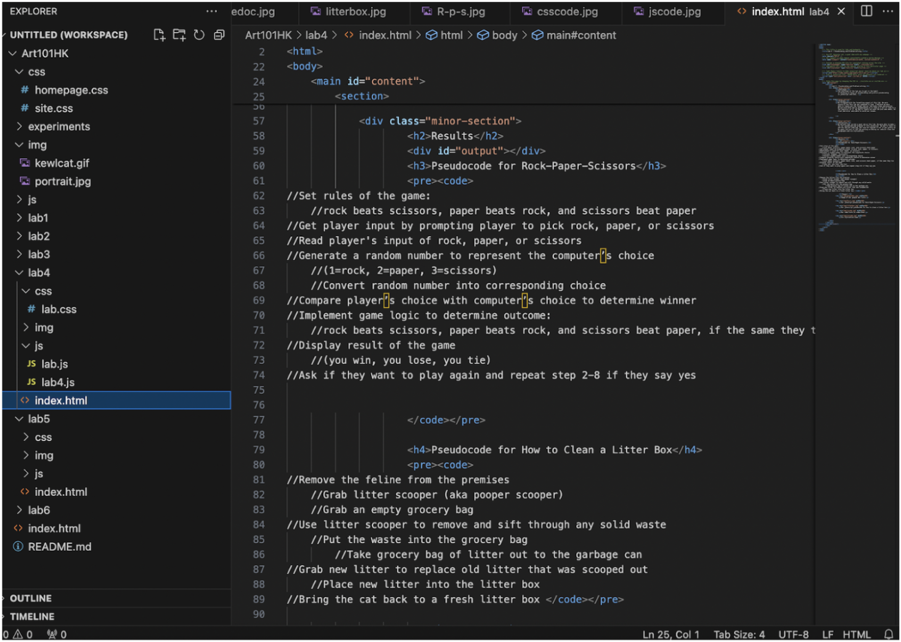
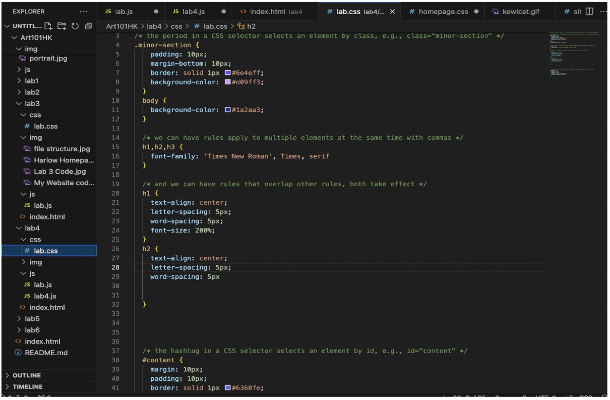

Lab 4 - Pseudocoding and Problem-solving
Challenge
The challenge of the lab was to get in the habit of thinking in terms of pseudocoding and pratice pseudocoding in javascript and html.
Problems
We struggled with the formatting aspect of this lab. We were unsure of how this lab was supposed to look. I believe we were able to figure out the format and our lab looks clean and precise. We are also both new to pseudocoding so it took us a bit of time to get the logistics of it. We had to figure out what the pre code meant, but through trial and error were able to solve our issues.
Reflection
We believe that we did a good job on this lab. We were able to make clear instructions for our pseudocode and program it into javascript. We had to learn how to upload our pseudocode and use the pre code tag, but once we figured it out it was pretty much smooth sailing. We spent the rest of the lab working on making our website clean and organized with screenshots, paragraphs and css stylizations.
Results
Pseudocode for Rock-Paper-Scissors
//Set rules of the game:
//rock beats scissors, paper beats rock, and scissors beat paper
//Get player input by prompting player to pick rock, paper, or scissors
//Read player's input of rock, paper, or scissors
//Generate a random number to represent the computer’s choice
//(1=rock, 2=paper, 3=scissors)
//Convert random number into corresponding choice
//Compare player’s choice with computer’s choice to determine winner
//Implement game logic to determine outcome:
//rock beats scissors, paper beats rock, and scissors beat paper, if the same they tie
//Display result of the game
//(you win, you lose, you tie)
//Ask if they want to play again and repeat step 2-8 if they say yes
Pseudocode for How to Clean a Litter Box
//Remove the feline from the premises
//Grab litter scooper (aka pooper scooper)
//Grab an empty grocery bag
//Use litter scooper to remove and sift through any solid waste
//Put the waste into the grocery bag
//Take grocery bag of litter out to the garbage can
//Grab new litter to replace old litter that was scooped out
//Place new litter into the litter box
//Bring the cat back to a fresh litter box Images!
Image of our google doc lists
Our javascipt pseudocode for Rock-Paper-Scissors
Our javascript pseudocode for how to clean a litter box
Our code lists in index.html
Css stylization code